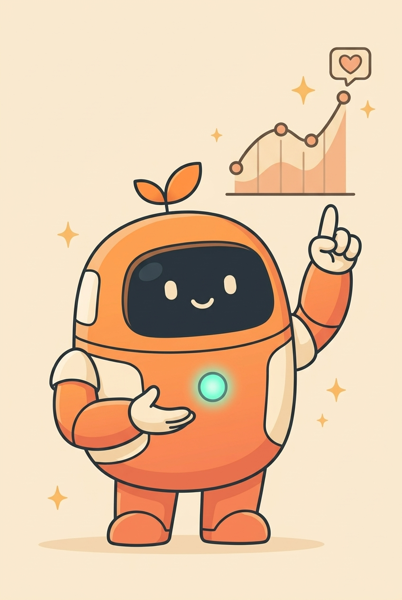
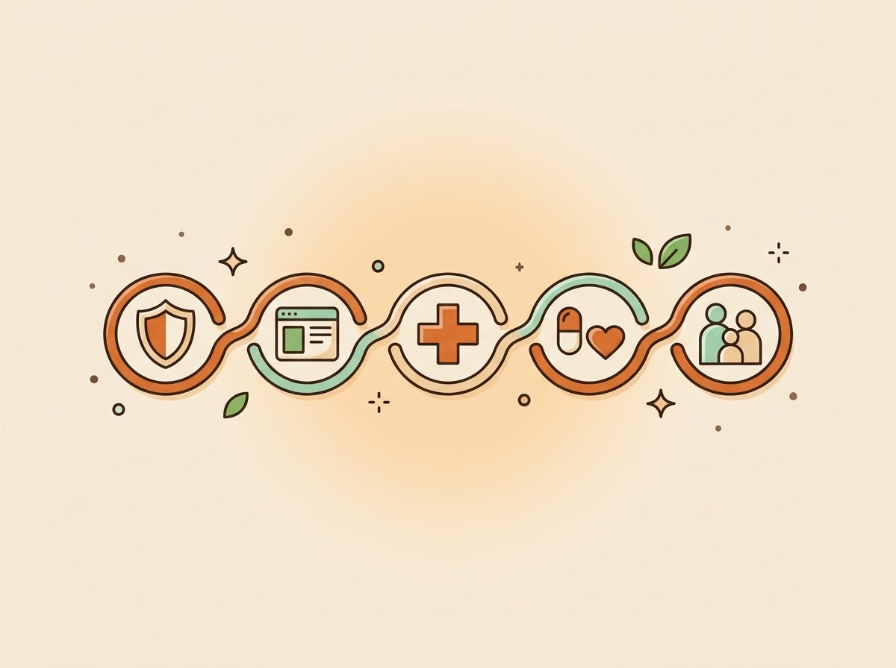
富德联合可立足：保险支付方与客户关系优势，向健康管理服务的组织者延伸，整合医院、医生、药房、体检、护理和养老资源，形成“保险保障＋健康服务＋长期客户经营”的协同闭环。
2024年中国健康管理行业研究报告（简版）
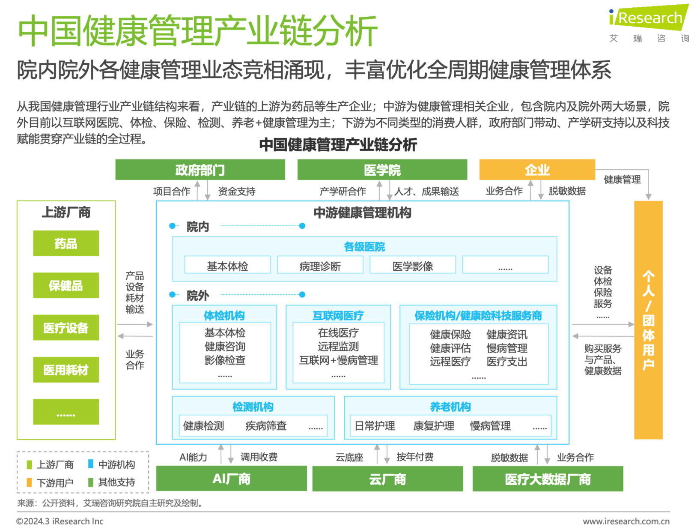
2025年中国医疗健康产业十大趋势
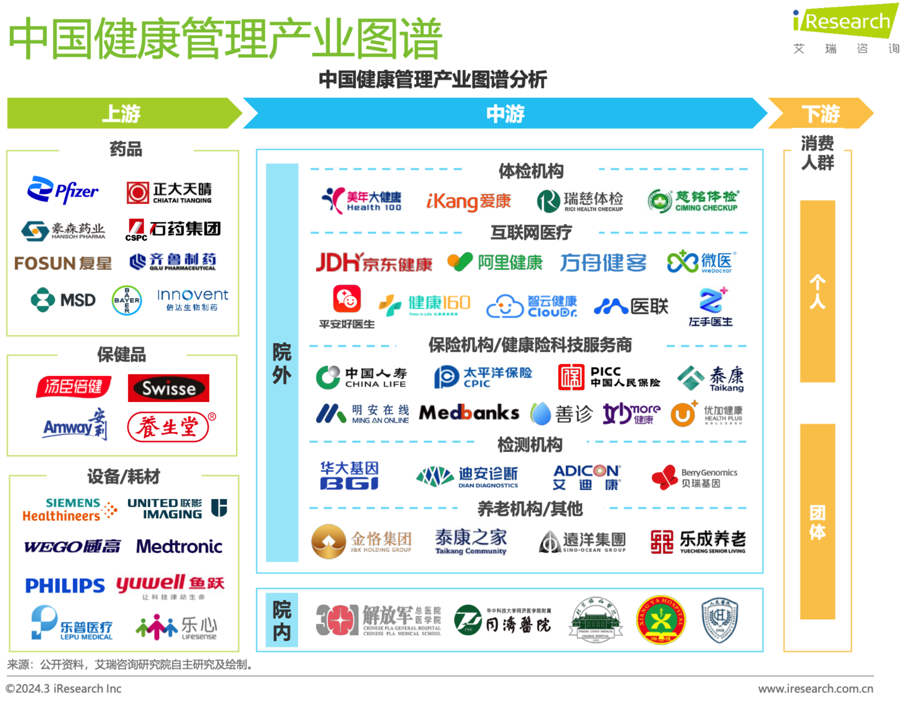
补充参考：2025 AI时代健康睡眠白皮书 · 艾瑞咨询
| 阶段 | 核心模式 | 代表性特征 |
|---|---|---|
| 1.0 流量与问诊 | 在线问诊、医生咨询 | 解决“能不能在线问医生” |
| 2.0 医药与交易 | 线上处方、药品零售、医保支付 | 解决“问完诊怎么买药” |
| 3.0 保险与健康管理 | 家庭医生、慢病管理、就医协助、养老服务 | 解决“谁为长期健康服务付费” |
| 4.0 管理式医疗＋AI | 支付方整合、服务网络、主动健康管理、AI辅助 | 解决“如何提升服务效率、控制医疗成本” |
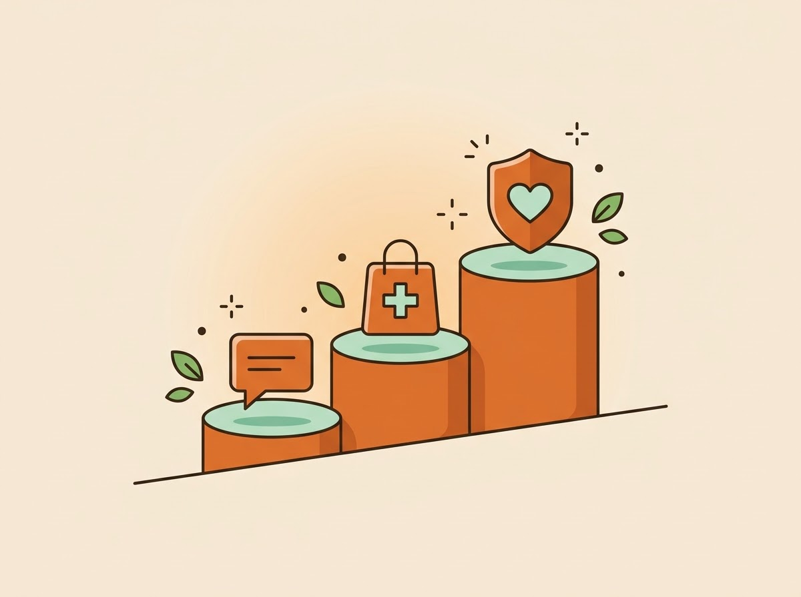
| 支付方 | 典型购买内容 | 真正购买的价值 |
|---|---|---|
| C端个人及家庭 | 问诊、购药、体检、家庭医生、健康会员 | 方便、快速、医疗决策支持 |
| F端保险及金融机构 | 医疗健康权益、就医协助、养老服务 | 产品差异化、客户留存、理赔协同与控费 |
| B端企业 | 团险、健康福利、员工健康管理 | 员工体验、福利运营、健康成本与HR管理 |
| 平台类型 | 核心优势 | 主要挑战 |
|---|---|---|
| 医药电商型 | 药品交易、高频消费、供应链 | 医疗服务深度和用户长期管理不足 |
| 医生/问诊平台型 | 医患连接、专科服务、医疗内容 | 支付意愿低、商业化效率有限 |
| 保险协同型 | 支付方资源、家庭医生、医疗养老服务 | 对集团客户和线下履约网络依赖较强 |
| 医院/区域平台型 | 医疗资源、医保和本地服务 | 跨区域复制和市场化能力有限。(案例：京柏医疗) |
| 阵营 | 代表企业 | 优势 | 短板 |
|---|---|---|---|
| 保险系HMO | 平安健康 | 支付方天然协同，客户黏性高 | 依赖集团生态，外部拓展有限 |
| 保险跟进者 | 人保健康、国寿健康险、泰康 | 保险客户基数大 | 医疗服务能力积累较浅 |
| 电商系平台 | 京东健康、阿里健康 | 流量大、药品供应链强 | 缺乏保险支付闭环 |
| 互联网医疗 | 微医 | 医院资源丰富 | 盈利模式尚未完全跑通 |
| 保险科技 | 众安保险 | 技术灵活 | 生态规模有限 |
| 医院/区域平台 | 京柏医疗/天使医生 | 院内外一体化健管协同管理 | 跨区域复制和市场化能力有限 |
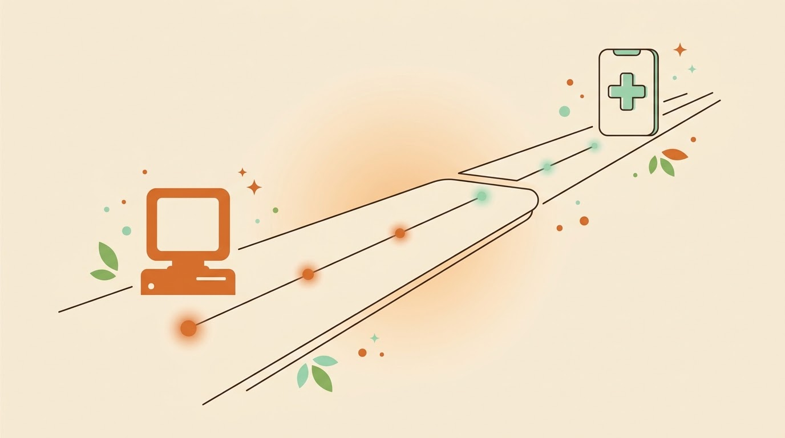
医疗是强专业、强信任、强责任行业，用户无法凭经验判断质量，很难像电商一样靠“撮合供需”直接完成商业闭环。
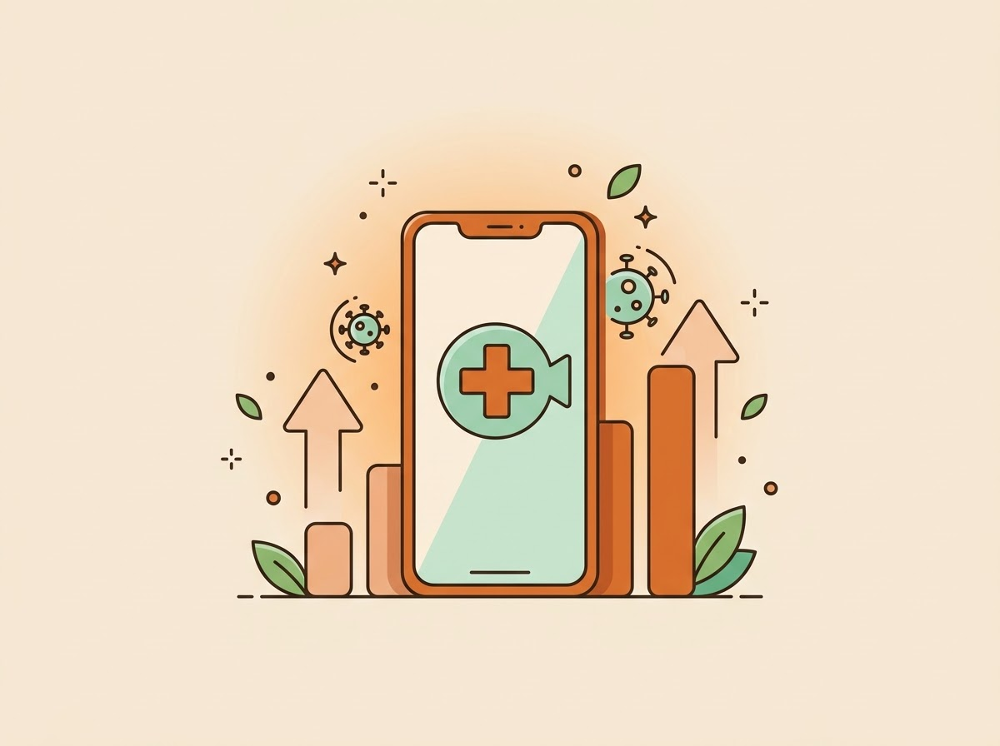
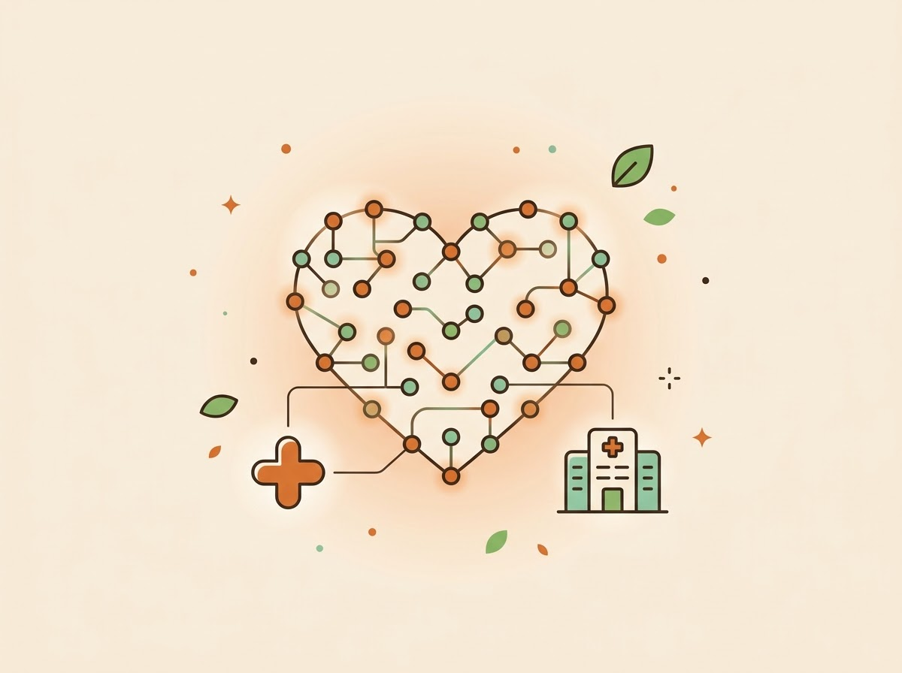
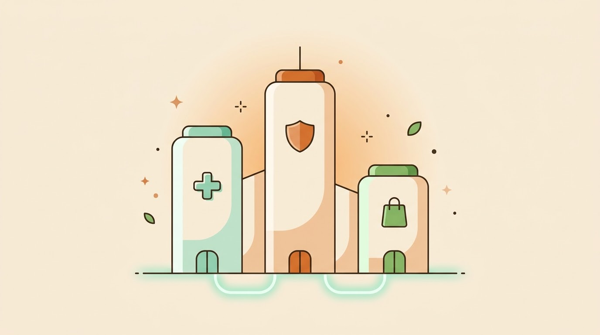
保险系管理式医疗：“324”模式，F/B/C三方商保协同，2024年首次盈利
“健共体”按人头付费，与政府医保深度共建
电商驱动，“医检诊药”闭环，规模最大，但不参与保险协同这条赛道
医药电商履约为现金流核心，医疗服务是转化引擎
纯B案例：无保险协同，专科增量价值证据最扎实
保险协同+增量价值创造，全球对标样本
| 年度 | 营业收入（亿元） | 净利润／亏损（亿元） | 经营阶段 |
|---|---|---|---|
| 2020 | 68.66 | −9.49 | 疫情带动线上需求 |
| 2021 | 73.34 | −15.39 | 收入峰值、重投入期 |
| 2022 | 61.60 | −6.11 | 收缩低协同性业务 |
| 2023 | 46.74 | −3.35 | 转向F端与B端 |
| 2024 | 48.08 | +0.88 | 首次全年盈利 |
| 2025 | 54.68 | +3.80 | 连续第二年盈利 |
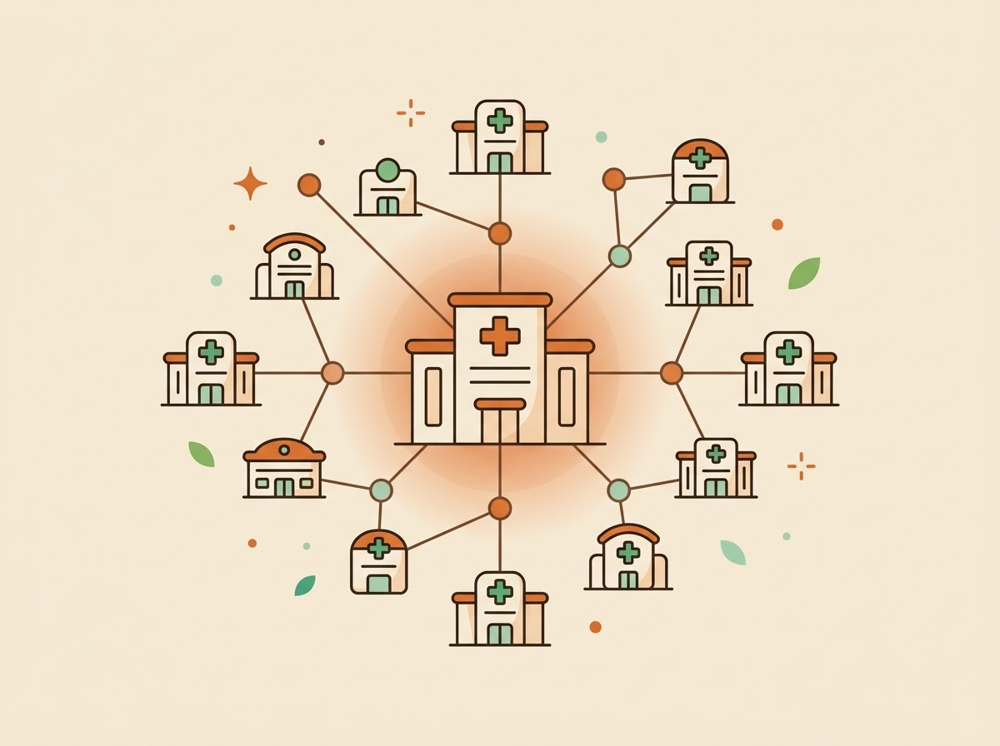
| 报告期 | 持续经营收入（亿元） | 经调整亏损率 | 关键变化 |
|---|---|---|---|
| 2021 | 9.62 | 140.8% | 重投入建设期 |
| 2022 | 13.68 | 59.7% | 收入与效率同步改善 |
| 2023 | 18.63 | 27.1% | 亏损率继续收窄 |
| 2024H1 | 18.18 | 7.0% | 接近盈亏平衡 |
| 年度 | 营业收入（亿元） | Non-IFRS净利润（亿元） | 增长重点 |
|---|---|---|---|
| 2020 | 193.88 | 7.49 | 上市首年 |
| 2021 | 306.82 | 14.14 | 疫情后服务扩张 |
| 2022 | 467.36 | 26.16 | 药品与服务双增 |
| 2023 | 535.29 | 35.83 | 盈利质量提升 |
| 2024 | 581.56 | 47.90 | 服务收入增速18.9% |
| 财年（截至3月） | 营业收入（亿元） | 关键进展 | 口径 |
|---|---|---|---|
| FY2021 | 155.77 | 医药电商整合期 | 年度报告 |
| FY2022 | 205.78 | 供应链扩展 | 年度报告 |
| FY2023 | 267.60 | 云药房增长 | 年度报告 |
| FY2024 | 270.26 | 平台化能力强化 | 年度报告 |
| FY2025 | 305.98 | 净利润14.32亿；商家4.83万 | 年度报告 |
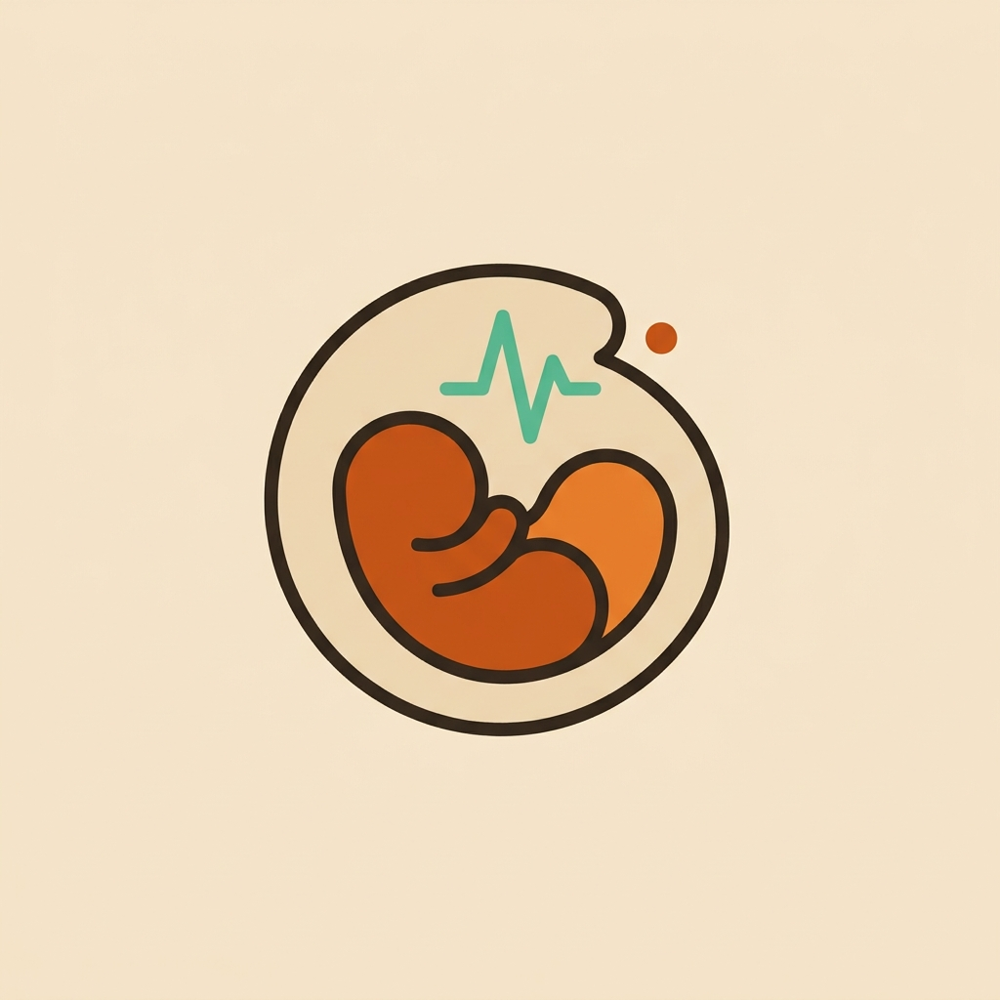
| 年度 | 线上成交金额（亿元） | 订单数 | 同比 |
|---|---|---|---|
| 2019 | 0.29 | 107,482 | — |
| 2020 | 0.64 | 190,704 | +120.4% |
| 2021 | 1.14 | 220,801 | +76.9% |
| 2022 | 1.31 | 80,555 | +14.8% |
| 2023 | 2.21 | 138,053 | +69.1% |
| 2024 | 3.92 | 226,832 | +76.9% |
| 2025 | 4.83 | 207,376 | +23.5% |
| 2026 | 3.87 | 145,240 | 内部当前累计 |
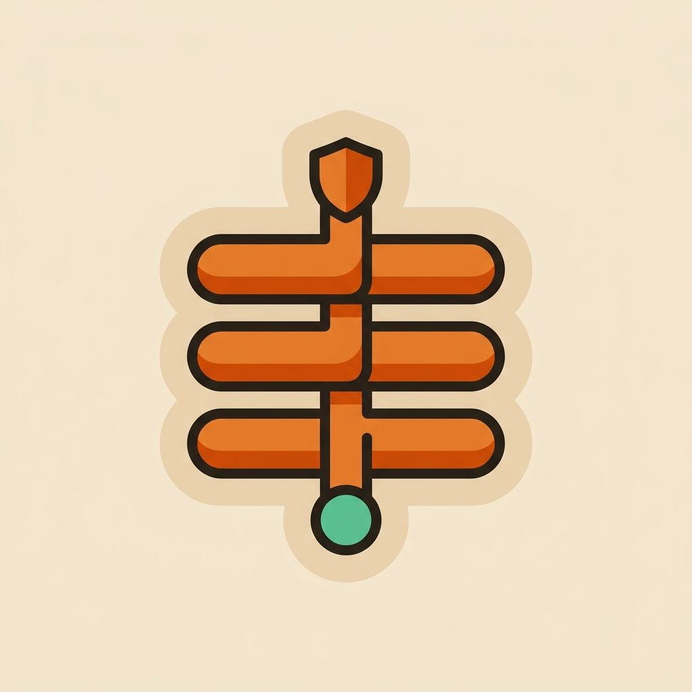
| 年度 | 总收入（亿美元） | 净利润（亿美元） | 关键节点 |
|---|---|---|---|
| 2020 | 2,572 | 154 | 医保与Optum协同扩张 |
| 2021 | 2,876 | 172 | 收入跨越2,800亿 |
| 2022 | 3,242 | 201 | Optum持续增长 |
| 2023 | 3,716 | 224 | 规模继续提升 |
| 2024 | 4,003 | 144 | 受网络攻击等一次性因素影响 |
| 维度 | 平安健康 | 微医（拟上市） | 京东健康 | 阿里健康 | 京柏/天使医生 |
|---|---|---|---|---|---|
| 2024营收 | 48.08亿元 | 18.18亿元（H1） | 581.6亿元 | 305.98亿元（FY2025） | 约5亿元 |
| 净利润 | 0.88亿元（首次盈利） | 经调整亏损1.28亿（H1） | Non-IFRS 47.9亿元 | 14.32亿元；调整后19.50亿 | 未披露 |
| 用户/会员 | F端2481万+B端581万；家医会员1400万+ | 健共体会员90万（天津）；连接31.8万医生 | 年度活跃1.836亿 | 未按可比口径披露；依托淘天/支付宝/饿了么 | 240万+孕产家庭（官网口径） |
| 核心收入来源 | F端商保(50%)+B端企业 | 天津医保按人头(56.8%) | 药品零售1P+3P | 自营药房+天猫佣金/营销 | 院端项目+家庭健管 |
| 保险+医疗协同 | ★★★★★ 平安系内闭环 | ★★★ 友邦+政府医保 | 不参与该赛道 | 不参与该赛道 | 部分用户刷医保 不参与该赛道 |
| AI/大模型 | 平安医疗大模型，AI体检准确率98%等 | 微医医疗大模型已备案，AI医院 | 京医千询，AI智能体康康3000万人次 | 医疗AI/知识图谱/智能问药，协同阿里云 | 妇幼专科数据/远程胎监；多学科智能体共创中 |
| 主要风险 | 集团关联依赖/C端弱化 | 客户集中58.7%/政策依赖 | 缺保险闭环/服务占比低 | 合规/平台治理/价格竞争 | 专科天花板/财务不透明 |
| 要素 | 平安324模式 | UNH管理式医疗 |
|---|---|---|
| 服务对象 | 三大支付方：F端综合金融客户、B端企业、C端个人 | 三大支付方：雇主、个人、政府Medicare/Medicaid |
| 枢纽角色 | 家庭医生+养老管家（轻资产+流程整合） | PCP初级保健医生+病例管理师（重资产+雇佣型） |
| 支付逻辑 | F端保险预付费购买健管权益；B端雇主预付费+按人头；C端会员制 | 健康险保费；Medicare/Medicaid按人头付费（capitation）；雇主ASO |
| 医生雇佣形态 | 自聘核心团队（5万人含外部）+平台合作 | Optum Health雇佣超9万名医生（2024美国最大医生雇主之一） |
| 国家医保关系 | 商业保险为主，间接接入个账医保 | CMS直接付费占营收40%，深度嵌入公共医保 |
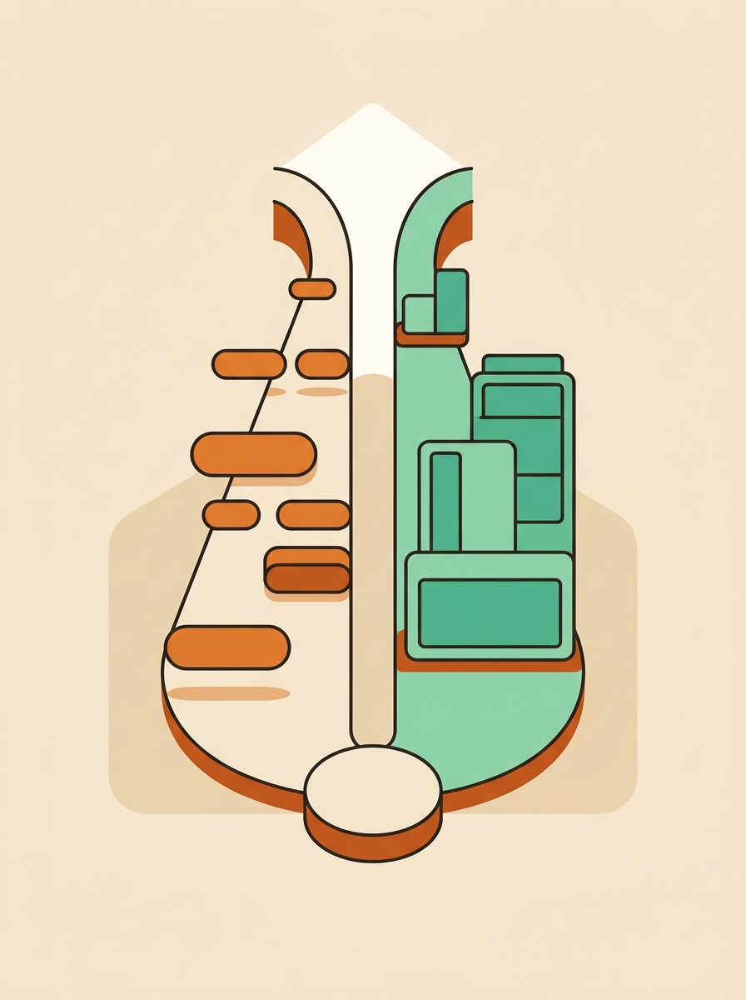
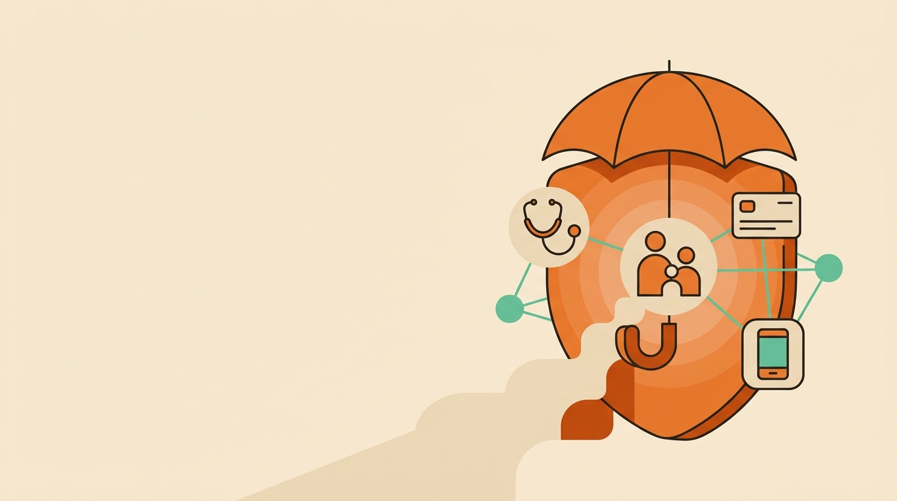
取得控制权后，资产、负债、收入、费用及现金流逐项并入；少数股东损益与权益单独列示。
统一报告期与会计政策，抵销内部交易、往来余额及未实现损益；关联交易仍按上市规则审议、披露。
资源配置、业绩归属与风险管理进入集团治理；并表不等于私有化，公司仍为独立上市主体。
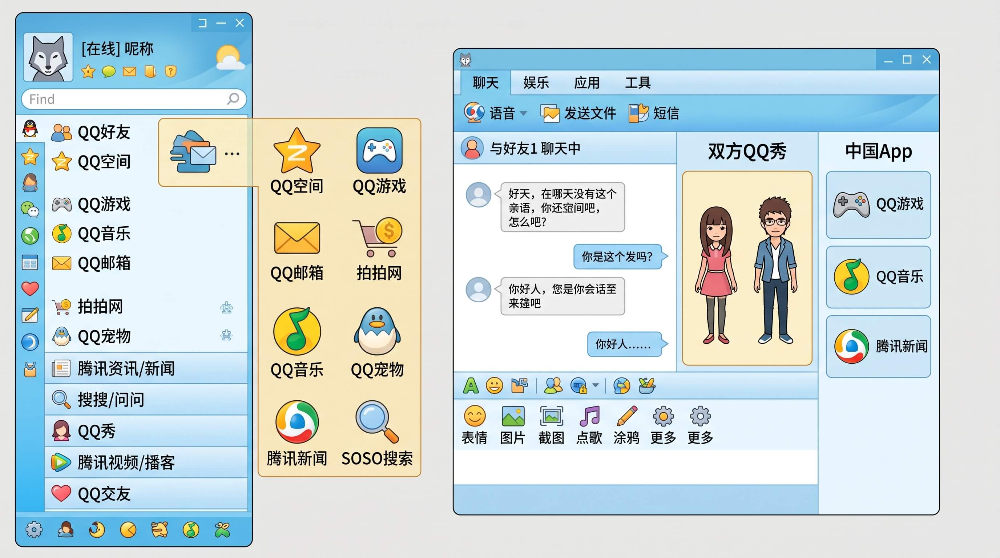
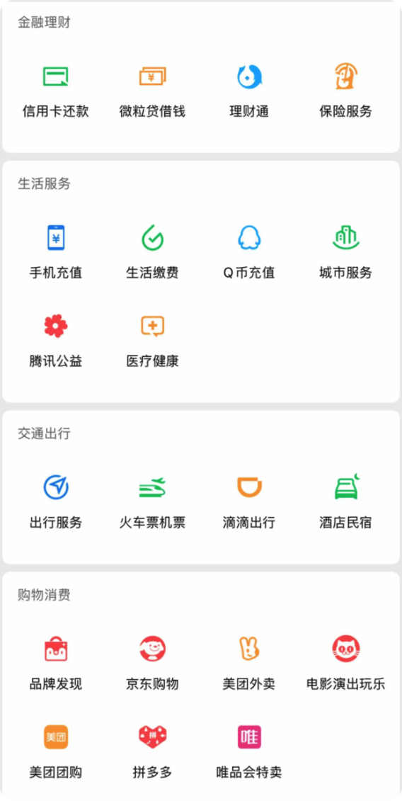
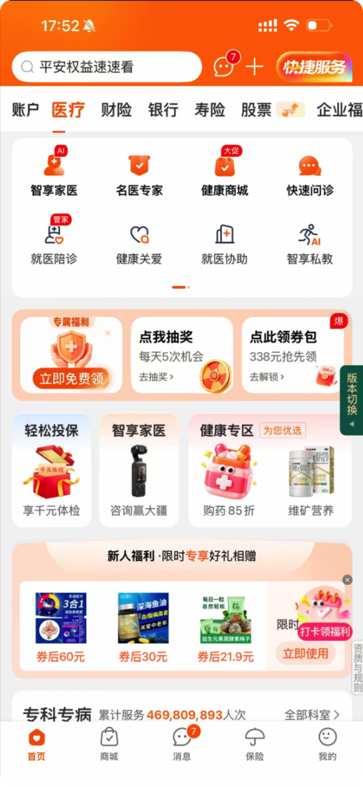
在投保、续保、理赔和权益资格确认时，先建立客户关系与支付基础。
在日常健康问题里持续出现，让客户有理由反复回来并形成真实使用。
降费增效 × 客户价值 × 支付协同
观察重点：集团外客户能否稳定获客、续约与付费，而非只看集团内导流。
观察重点：B端能否持续接棒；“其他”收入收缩不能直接推断为医养需求衰退。
观察重点：调整不等于治理失效；应看战略、团队与客户项目能否连续执行。
观察重点：集团生态目标≠上市公司独立增长；B端扩张也不自动等于摆脱集团渠道。
不计成本拉新，以IPO估值75亿美元为阶段性结果。
砍掉医药电商，聚焦集团 F端／B端协同。
以HMO范式、家庭医生会员制与 O2O 重塑服务模式。
324模式、家医11312、养老服务并表，走向可验证的经营协同。
四阶段不是线性增长，而是一次战略重心的迁移。
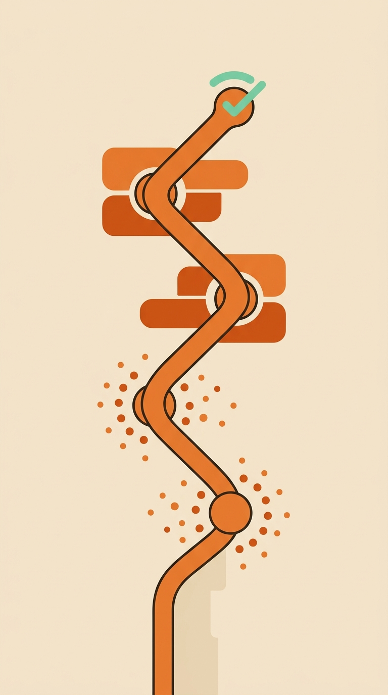
保单嵌入权益。寿险／健康险／银行，促获客、增保费、提黏性。
企业福利采购、员工健康账户、企业医务室、体检管理。
F2C／B2C增值升级；慢病专病包自费加购。
AI+全科／专科医生团队。
五大职能：
①建档 ②精准分诊 ③调度资源 ④全程管理 ⑤连接保险直付
老人享用 · 子女买单。
三大管家：
①智能管家（监测预警／紧急呼叫）②生活管家（助餐助浴／适老改造）③医生管家（慢病用药／上门护理）
7×24初诊、AI初诊、慢病处方、线上购药。（低成本 · 高频入口）
名医绿通、检查预约、住院协助、商保直付。（高质量 · 重症托底）
送药到家、上门护理、适老改造、居家和护。（深度场景 · 银发延展）
驻场医务室、健康日活动、员工体检、急救培训。（工作场景 · 交付+获客场）
以专业判断和统一路径，让家庭医生从一次问诊角色变为长期健康关系的责任人。
12项资源覆盖咨询、健康、慢病与全程就医四类关键需求。
不是功能堆叠，而是医疗场景中的确定性与责任承接。
F、B、C 三类客户，对同一服务购买不同经营结果。
单卖、权益，还是保险与服务一体化的组合方案。
在真实健康事件中，用户是否愿意使用、留存并继续购买。
入口解决判断，导航降低复杂度，支付让保障被兑现；持续管理与照护，让服务关系沉淀为长期信任。
在线问诊、家医、专科咨询：先帮用户判断下一步。
挂号、绿通、陪诊与住院协调：少走医疗系统的弯路。
直赔、理赔、特药与费用结算：让保障真正被兑现。
慢病、复诊、康复与家医随访：让健康不是每次重新开始。
养老、护理、适老化与应急：替子女分担照护责任。
获客转化、续保粘性、加保与赔付风险管理。
福利体验、招聘留任、缺勤改善与团险使用率。
关键时刻少焦虑、少跑腿、少决策失误。
支付能力、客户关系与医疗服务协同。
可量化、可触达，也更容易规模化采购。
问诊、买药、报告解读等高确定性服务。
以保单、会员与健康服务共同经营。
面向员工及家属的一体化健康管理。
不宜用“泛健康管理”作为单独付费理由。
逻辑：结果即时、价值清晰、用户自己愿意掏钱。
逻辑：持续性强、单独付费弱，却能显著增强客户关系。
逻辑：把高价值保障、高频服务和长期关系一起经营。
依据银保监办发〔2020〕83号：健康管理可以纳入保险条款，也可以单独提供，但两种形态的定价与销售边界不同。
| AI能力模块 | 承接的服务场景 | 如何支撑交付 | 可观察成效 |
|---|---|---|---|
| AI智能分诊问答 | 平安健康 App／金管家健康专区 | 理解主诉、多轮追问，并路由至 38,000+ 细分专科 | 分诊准确率超 99% |
| AI医生工作台 | 自有 3,000+ 全职医生接诊 | 病历秒级生成、临床决策支持，释放医生重复性工作 | 单医生承载力提升 3–5 倍 |
| 家医慢病管理 | 臻享 RUN 会员、家医签约客户 | 动态健康画像、随访建议与异常转人工，保证连续管理 | 慢病管理改善率 90% |
| 居家养老管家 | 居家养老、适老化改造客户 | 毫米波监测、行为异常识别与分级联动，保障关键时刻响应 | 跌倒预警响应显著提速 |
运营闭环：投保／权益激活 → AI 识别需求与沉淀画像 → 人机协同调度服务与连续随访 → 就医、理赔、养老关键时刻履约 → 留存、加保与客户价值回流。技术不替代服务，而是让分层、标准化、可追踪的服务能够规模化持续发生。
不确定要不要去医院
不知道该去哪儿
已有保险，想知道怎么用
买药或复诊续方
慢病需要长期管理
照顾不在身边的父母
体检／口腔／医美等消费医疗
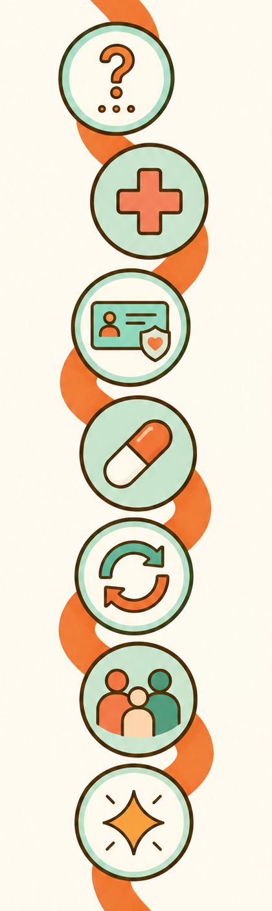
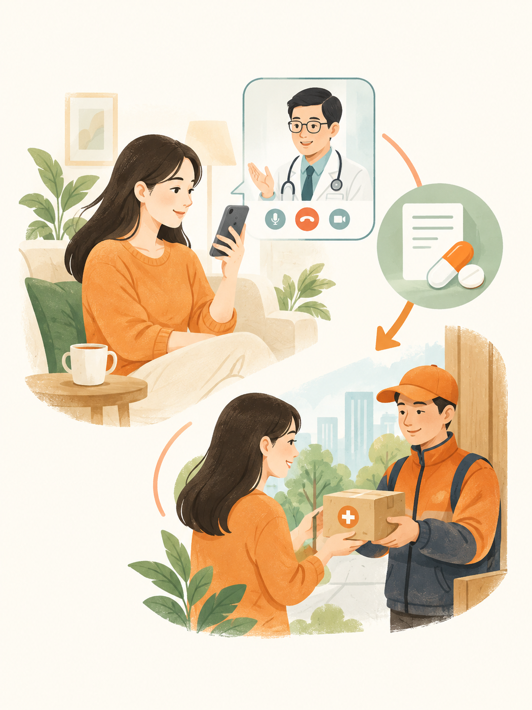
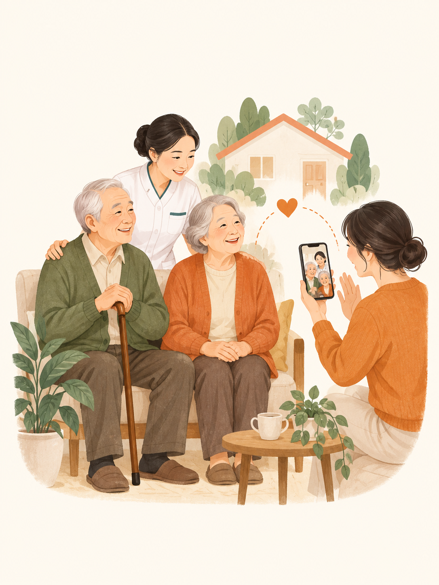
从完成一件事，到做出正确决定；从一次帮助，到持续承担责任，用户感知的价值逐级上移。
平安健康真正想占据的，不只是医疗服务入口，而是用户在健康和疾病场景中的“信任入口”。
用户看到一次问诊或陪诊；平台与合作方获得的，是可持续运营的服务、数据与客户关系。
平安健康不是单纯靠用户购买一次问诊服务盈利，而是通过医疗服务增强整个平安客户关系——这也是为什么“医养客户寿险新单件均提升 1.5–23.4 倍”这组数字，比服务本身的使用率更能说明平安做这件事的真正动机。
这正是平安健康从“保险附赠权益”变成“医疗健康品牌”的关键过程。
| 用户表层表达 | 用户实际购买的价值 |
|---|---|
| 我想问医生 | 我想知道问题严不严重、下一步怎么办 |
| 我想挂专家号 | 我想提高找到好医生的概率 |
| 我想看保险能不能赔 | 我想降低医疗费用不确定性 |
| 我想快速理赔 | 我想在生病时尽快拿到钱 |
| 我想买家庭医生 | 我想有人持续关注我和家人的健康 |
| 我想给父母买服务 | 我想把照护责任部分外包 |
| 我想做慢病管理 | 我想有人帮助我坚持 |
| 我想买药 | 我想快速完成从诊断到治疗的过程 |
| 我想用养老服务 | 我想让父母获得持续、可靠的照护 |
| 企业购买健康管理 | 企业想把员工健康风险变得可管理 |
“平时是我的健康账户，有事时是我的医疗管家，生病时是我的支付和理赔助手，父母需要照护时是我的家庭协同者。”
从产品设计角度看，真正要卖的不是“问诊次数”或“功能数量”，而是医疗决策确定性、医疗服务效率、保险兑现能力和家庭照护安心感。
低门槛、即时、轻量；无需额外下载，可从微信、保险顾问、公众号或客服直接进入。
承载复杂、持续和长期的健康服务，并把个人与家庭服务记录持续沉淀下来。
App 解决“长期关系”（家庭成员管理、健康档案、家庭医生、慢病管理、会员服务、养老管家等需要沉淀的长期服务）；小程序解决“即时兑现”（理赔、查保单、申请权益、在线问诊、上传材料等需要在具体时刻快速完成的一次服务）。
负责获客、成交与标准化权益讲解
建立信任、识别保障需求、完成保单设计与促成签单。
按“产品—权益”对照表解释客户能获得什么、如何发起服务。
负责权益兑现、服务交付与复杂决策
服务经理、合作医院／医生网络完成问诊、导航、健康管理与随访。
由全职医生与外部专家网络负责转诊、二诊、MDT 等专业判断。
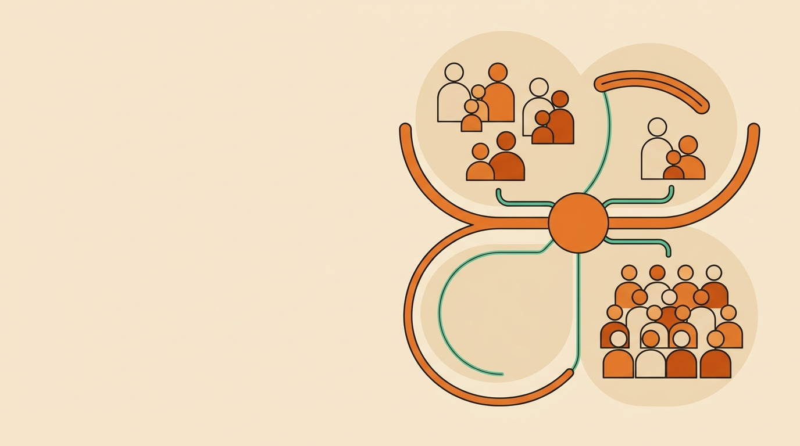
检测发现风险 → 制造焦虑 → 当场卖保险
我买的不是一次检查，也不是一张“权益清单”；而是未来遇到健康、就医、养老问题时，有一个长期可调用的人和网络——后续用家庭医生、金管家App、就医协助、养老管家持续履约
平安销售更高客单保单的关键，不在筛查设备本身，而在于把它包装、兑现为一套“保险保障 + 会员身份 + 家庭服务网络”的长期方案。
| 角色 | 主要任务 |
|---|---|
| 寿险分公司、支公司、营业区 | 场地、客户运营、活动执行、保单承接 |
| 保险代理人 | 邀约客户、家庭需求访谈、活动后跟进 |
| 平安银行、证券等金融网点 | 联合邀约高净值或存量金融客户 |
| 平安健康／平安好医生 | 家庭医生、健康档案、线上服务、就医资源承接 |
| 医疗、体检、养老服务商 | 检测、咨询、体验和线下履约 |
| 集团品牌活动 | 如“99健康节”、养老服务发布、客户回访活动 |
平安公开描述过由寿险、产险、银行、健康险、平安健康多家公司共同参与的健康活动——这意味着它不是单靠寿险网点卖服务，而是用集团客户池和医疗养老资源共同承接。
低价值活动里，用户的感知链路会变成：你让我做检测 → 检测多少有问题 → 你告诉我风险很大 → 你向我卖保险。这样筛查就成了促成工具，用户也会把“健康管理服务”理解为保险销售的包装。关键是把逻辑倒过来。
| 低价值的活动逻辑 | 高价值的平安式逻辑 |
|---|---|
| 发现问题，促进投保 | 先让客户感知未来问题有人负责 |
| 一次性筛查 | 筛查—解读—转诊—跟进—复查的闭环 |
| 销售人员讲健康 | 医生、健康管理师、养老管家提供专业解释 |
| 送一堆权益 | 用真实场景解释“权益何时被调用” |
| 只讲疾病风险 | 讲家庭医疗、就医、照护、养老的确定性 |
| 当场成交为目标 | 激活服务、建立档案、后续家庭经营为目标 |
| 用户是被销售对象 | 用户是会员、家庭服务的长期使用者 |
一句话：平安真正要卖的，不是“筛查后你可能有病”，而是“未来你和家人有事时，平安能把事情办下来”。
不把健康权益讲成赠品，而讲清：谁来服务、何时可用、怎样调用。
服务资格、期限、地区与内容以具体产品规则为准；附加健康服务不等于保险责任，历史资格示例不代表当前通用投保条件。
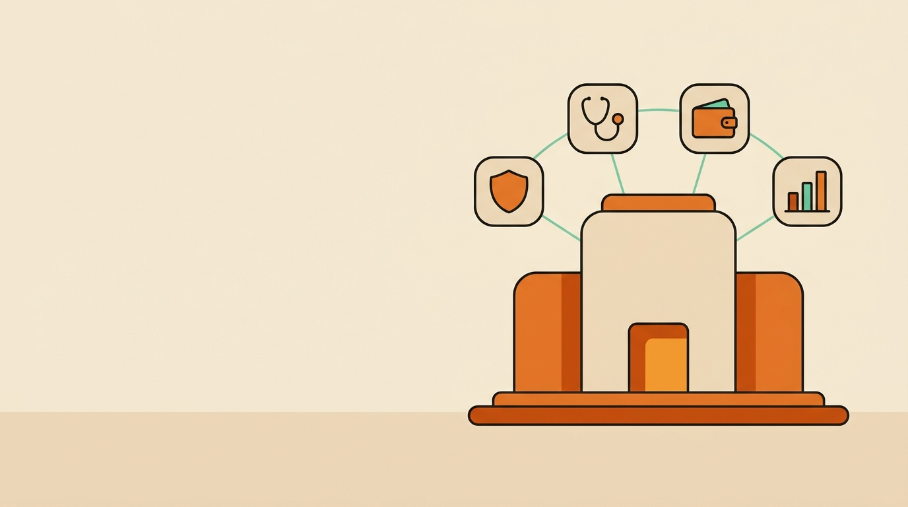
| 采购环节 | 关键参与方 | 需要回答的问题 |
|---|---|---|
| 立项与预算 | 管理层、HR、行政／工会 | 是否支持人才保留、组织关怀与风险管理目标？ |
| 方案与评估 | HR、行政、员工代表 | 员工与家属是否真正用得上，服务能否稳定交付？ |
| 招采与签约 | 采购、财务、法务 | 价格、预算、合同责任、数据与合规边界是否可控？ |
| 使用与复盘 | 员工、HR、服务商 | 使用率、响应时效、满意度和年度优化能否被证明？ |
企业买的是“健康福利的运营能力”
给员工一个长期可调用的入口
把保障责任、健康账户和服务打包
所以 B 端产品不是“把若干健康权益打包卖给企业”，而是把企业原本分散、低感知、难管理的医疗健康福利，变成一个统一的员工健康管理系统。
| 角色 | 表面需求 | 真正购买的价值 |
|---|---|---|
| 企业老板／管理层 | 员工福利、雇主品牌 | 组织稳定、人才吸引与保留、风险可控、管理层安心 |
| HR／行政／工会 | 落地员工关怀 | 少做琐事、有可交付成果、员工少投诉、服务商能兜底 |
| 财务／采购 | 预算和合同 | 支出可控、责任清楚、价格合理、服务可量化、合规可审计 |
| 员工及家属 | 保险与健康权益 | 生病时有人管、日常用得上、少跑腿、少垫钱、少焦虑 |
这项投入如何让组织更稳定、更有吸引力？
谁来把服务真正运营起来，而不是把工作又交回给 HR？
钱花在哪里、怎样控制、如何证明效果？
我什么时候能用、找谁用、出了问题谁负责？
关键原则：全员有基本获得感，重点人群有明确升级路径，企业有清楚的预算边界。
把分散的健康福利，交给一个专业团队统一管理。
场所、平台、人员、权益与履约分层配置：
| 模块 | 企业买到的内容 |
|---|---|
| 商业保险 | 医疗、重疾、意外等保障责任 |
| 健康账户／委托管理 | 统一支付或预算管理员工健康福利 |
| 医疗健康服务 | 家庭医生、体检、就医、药品、心理、慢病等 |
| 服务运营 | 员工宣导、健康日、使用培训、数据复盘 |
平安健康披露，截至 2024年末，其累计服务企业客户超过 2,000 家；企业健康管理收入占 B 端收入比重已明显提升。
客户入口：集团团险、银行对公、产险与企业主关系；直销、渠道推荐及招投标。
采购时点：团险／体检续约、福利分散、成本上升、满意度下降或重点人才升级。
成交路径：福利诊断 → 分层方案 → 小范围试点 → 年度签约。
权益激活：宣导、注册、绑定企业权益，完成建档和首次使用。
服务交付：到企活动、驻场引导、筛查、家庭医生与重点人群随访。
续约证明：记录覆盖、激活、使用、满意度、风险跟进和问题解决结果。
B 端销售由大客户解决方案销售＋团险／福利续约销售＋服务运营证明共同推进。企业活动贯穿试点、权益激活与履约验证。
不建议主讲“我们有50项服务、2000家机构、100场活动”——这类信息只能证明资源多，不能说明对用户有什么用。应围绕企业与员工的真实场景传递价值。
| 场景 | 应传递的服务价值 |
|---|---|
| 员工体检异常 | 有人解读、有人回访、有人协助复检，而不是只给一份报告 |
| 夜间小病或孩子发烧 | 能快速找到医生，知道是否需要去医院 |
| 慢病员工复诊配药 | 有持续提醒、咨询和购药支持，减少员工请假与奔波 |
| 员工确诊重疾 | 有人协助找科室、找医院、安排复检和住院，并衔接理赔 |
| HR面对员工咨询或投诉 | 有统一入口、服务时效和升级机制，不需要HR逐一协调 |
| 年度福利复盘 | 有使用数据、满意度与优化建议，可以向管理层交代成果 |
人才与组织健康投资
员工关怀运营外包
可控预算下的一体化方案
你和家人随时能用的健康支持
不是多一项福利成本，而是让员工在关键时刻感受关怀、让核心人才更愿意留下的组织健康基础设施。
企业无需自建医疗团队；我们承接触达、激活、执行、咨询、升级和复盘，HR 只需看结果。
不把钱分散在多个低使用率项目，而是按保障、服务和运营配置预算，用数据与年度报告评估投入产出。
不只是公司买了一份保险；健康、就医、用药和体检遇到问题时，有一个马上能找到、有人负责的入口。
续约动作：年度价值复盘 → 调整覆盖人数与权益档位 → 调整驻场、活动和医疗预算 → 续约、扩容及家属／高管权益升级。
健康小屋、检测设备、远程问诊大屏和医务室建设，提供线下服务触点。
可一次性采购或租赁；建成后的持续服务，需要年度合同继续承接。
员工权益、驻场运营、医疗网络、持续随访和数据报告，形成年年续约、逐步扩容的基础设施。
第二年仍需开通服务、配置团队、实际履约、更新档案并向企业证明价值。
年度合同组合：平台／项目费＋覆盖人数×权益档位＋驻场与活动运营费＋委托资金池／按次预算＋可选增购。
企业可按年度总价采购，后台分项核算；具体计价按项目约定。这是依据公开产品结构归纳的组合方式。
为医院及区域妇幼场景提供信息系统、母胎监护和家用健康监测设备。
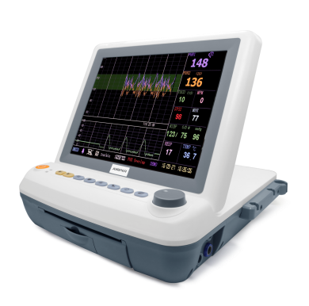
依托医院产检与专业资源，组织驻点服务、居家监测、线上团队和健康管家。
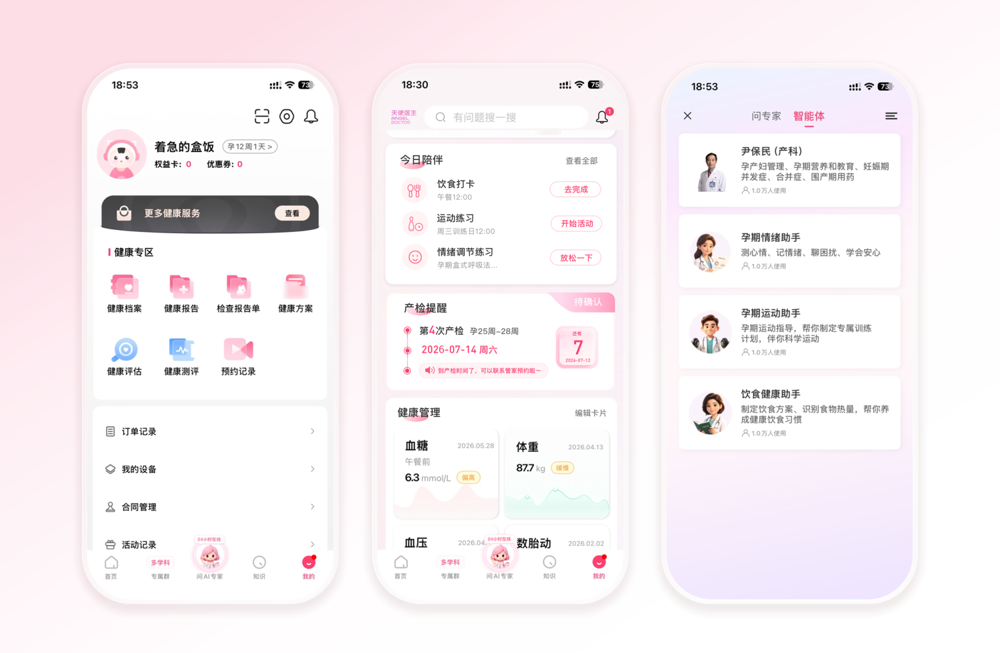
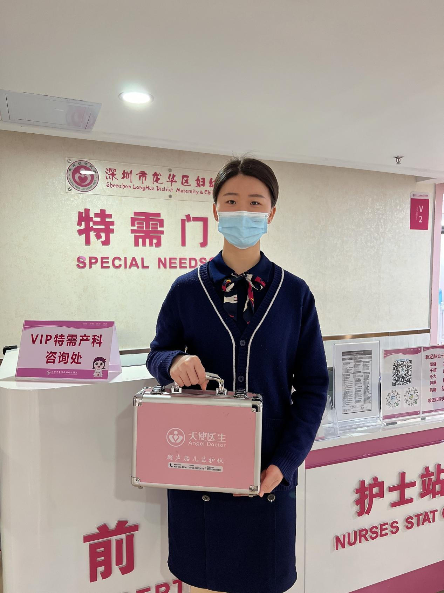
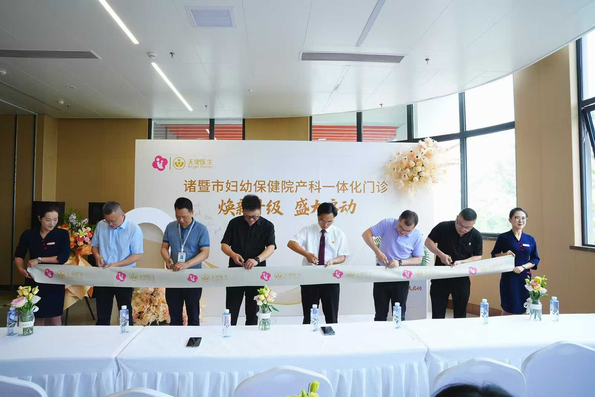
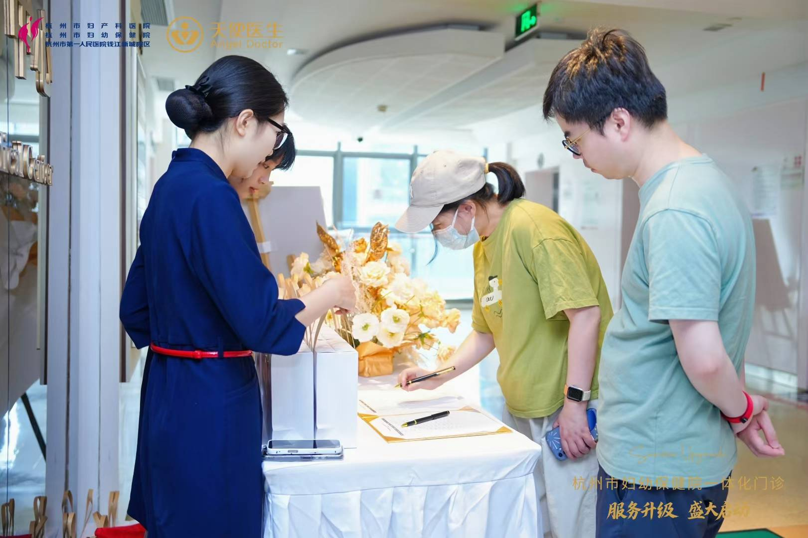
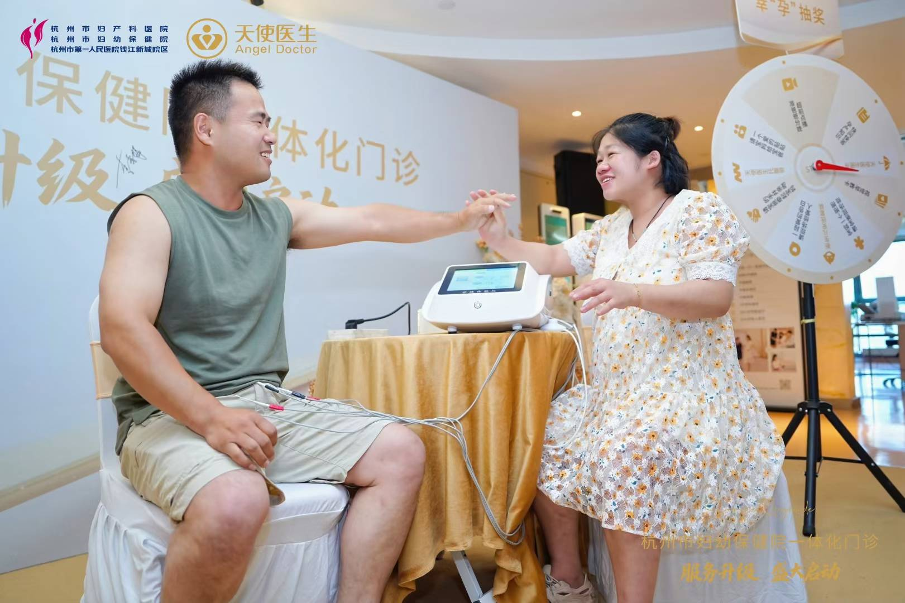
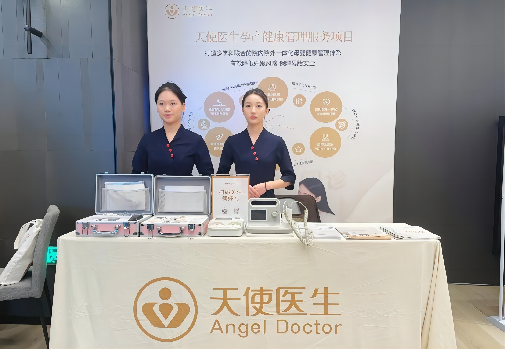
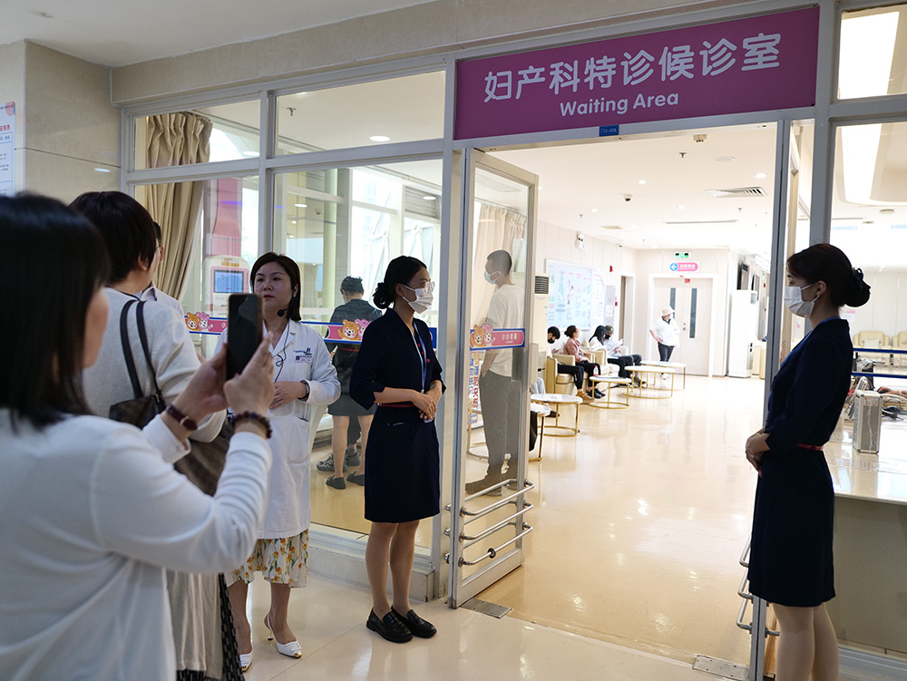
产检、医生诊疗与临床决策仍在医院体系内完成。
介绍服务、匹配套餐，并协调预约、陪诊和后续交接。
按需要选择监测、健康管理与就医体验服务。
孕期提醒、任务与记录、健康咨询和专业团队信息，在手机端集中呈现。
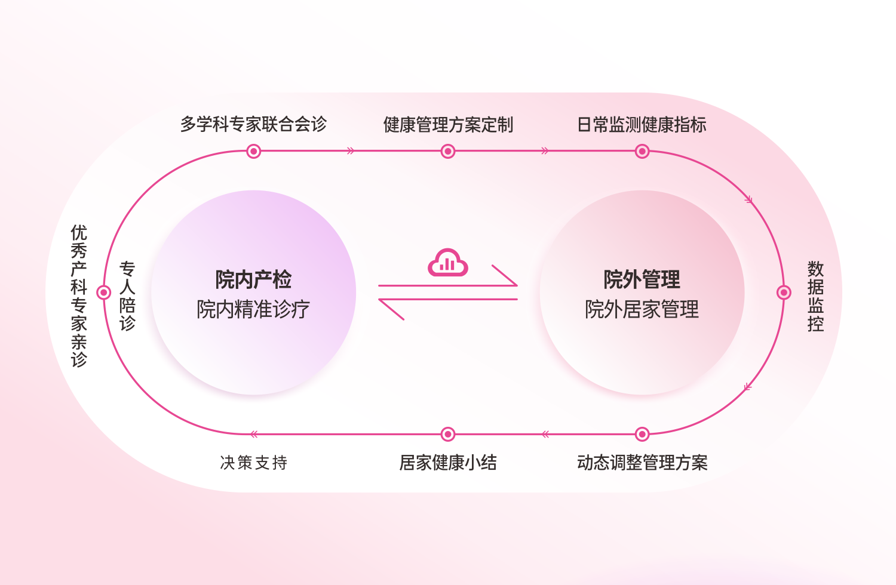
连接医院诊疗、院外监测和专业团队，按订单与工单衔接随访、响应和反馈。
在原有诊疗之外，组织更完整的服务场景。
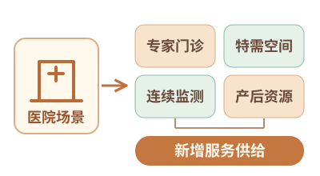
医院保留诊疗，合作资源按项目配置把分散的资源变成家庭能理解、能购买、能持续使用的产品。
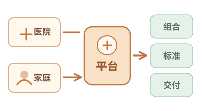
平台的价值是让双方的增量真正发生从基础监测，逐步延伸至专病管理与高端就医体验。
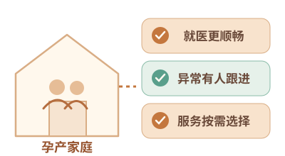
需求反馈帮助平台决定接入哪些资源产检、诊断、治疗和风险处置由医院医生负责；合作项目提供院内服务场景。
保留诊疗关系，增加服务供给组织驻点顾问、监测设备、App、健康管家与线上专业团队，承接院外服务。
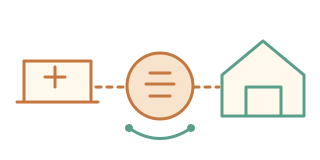
连接两端，制定套餐与交付标准在院内或线上了解服务，按需求购买监测、健康管理及 VIP 等套餐。
为更完整、确定的体验付费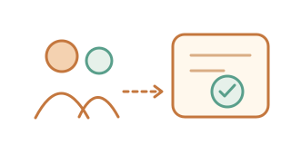
通过胎心、血压、血糖及产前筛查，更早识别高危信号。
用设备和平台填补两次医院就诊之间的家庭监测空白。
监测、预警、医生判断、干预、转诊和住院管理形成完整闭环。
降低高风险孕产过程中的信息不对称、等待焦虑和决策成本。
高客单来自专家、管家与服务协调：VIP产检＋1V1管家＋专家预约＋连续监测＋住院协助；月子与产后服务可按具体套餐另行组合。服务体验与专病管理可以叠加，但不等于医疗诊疗优先级。
位置会尽量在当前浏览器暂存；收到坐标后，我会将它们固定到演示文件。
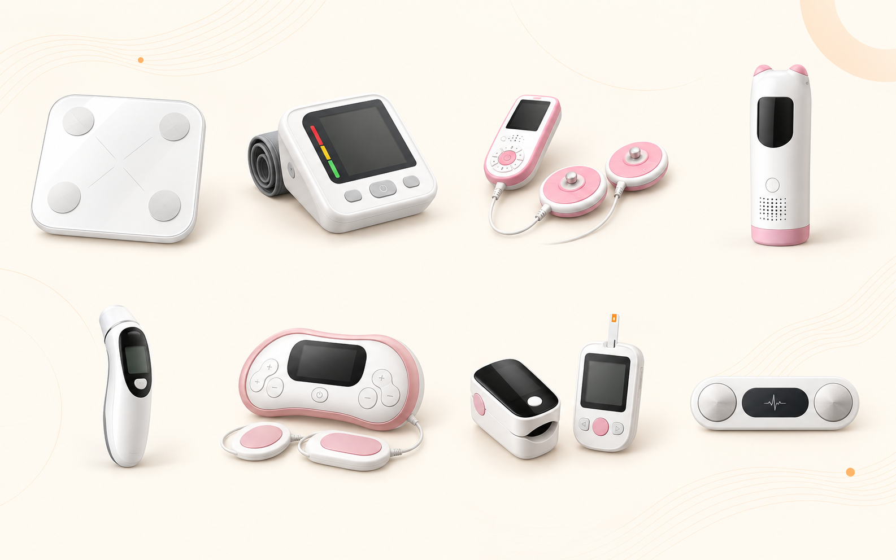
商务签约、场地共建与本地资源协调。
识别生命周期、健康需求与服务预算。
说明服务内容、价格、期限与边界。
完成购买，介绍专业服务团队和调用方式。
管理师接收资料，建立档案并指导设备使用。
报告解读师、管理师跟踪指标与日常执行。
主诊医生处置，必要时由MDT提供支持。
跟进复查与后续服务，将问题反馈给运营团队。
负责诊断、治疗与风险处置，是整个体系的临床决策核心。
产科、营养、心理及相关专科人员按实际服务配置提供支持。
院内顾问完成服务交接，健康管理师与管家承担日常跟进和协调。
记录套餐权益、孕期阶段和健康资料，明确服务负责人。
胎心、血糖、血压等数据进入平台，形成待处理记录。
解读团队按规则判读，管理师接收随访或异常工单。
管理建议由团队跟进；临床异常交医院医生判断。
记录联系、复查与反馈结果，避免“提醒之后无人负责”。
远程胎监判读中心｜原始业务PPT实景
京柏医疗年销售额仅 830万元，易辉临危受命。
早期互联网化失败的教训是：没有深入临床需求，只是披上互联网的外衣。由此确立“顺着趋势提前一点点布局”的渐进转型路径。
北京协和医院等 400余家医院上线天使医生围产期健康管理系统，进入信息化“智慧妇幼”平台阶段。
按内部最新经营口径，年度销售额约6—7亿元，合作医院1000余家；合作覆盖不等于全部开展驻点服务。
孕妇端／医生端 App
胎心监护仪、血压计等接入云端
与医院产科系统打通院内外一体化
邀请妇幼领域专家、协会及行业带头人参与学术交流和模式讨论。
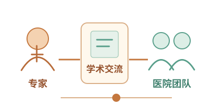
让医院理解专业价值与医院明确服务范围、专家安排、驻点职责及合作边界。
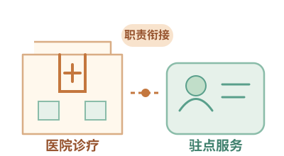
取得稳定的服务入口按项目接入特需门诊、VIP产检或产房、监测、筛查与产后服务。
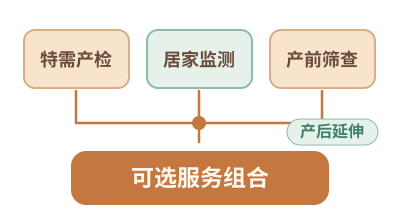
形成用户愿意付费的体验驻点、管家和专业团队持续履约，向医院反馈使用情况与问题。
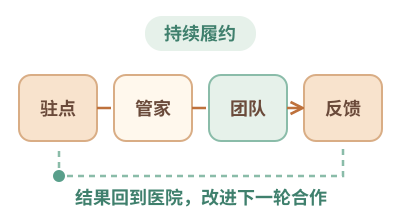
为续合作和新签约提供依据胎监单品可以成交，但用户关系短，服务延续性不足。
商务签约、院内驻点与服务试点，换来更稳定的触达场景。
院内与线上线索进入同一流程，个人和家庭付费后由专业团队持续交付。
开发医院与科室，明确合作范围、场地和服务责任。
装修、驻点和团队部署，增加可服务的用户接触面。
院内触达与线上线索共同进入服务流程，由驻点顾问匹配套餐。
医生、管理师与解读团队接力，完成连续监测和异常响应。
服务反馈强化合作信任，支持续合作与新医院拓展。
内部资料注明深圳科创委多中心研究、北京妇产医院队列研究。样本、对照及统计口径以论文原文为准；不作为运营规模的结论。
医院保留诊疗关系；平台补充专家资源、特需体验、院外监测与就医协调，形成更完整的服务。
单项监测做入口，专病管理解决持续风险，VIP服务承接高端需求；驻点与线上营销解释不同套餐。
商务与驻点完成合作和转化；管家、解读师、医生各负其责，按工单接续并记录异常处置与复查。
每个合作点都核对供给接入、用户触达、付费、服务使用、履约成本与医院反馈；有效再复制。
| 比较维度 | 天使医生 | 平安健康 |
|---|---|---|
| 支付方 | 孕产个人和家庭直接付费为主本章聚焦To C健康管理服务 | 保险集团＋企业客户由稳定支付方统筹服务 |
| 核心入口 | 医院、医生与监测设备从孕产临床流程切入 | 保单、代理人和企业账户从金融客户关系切入 |
| 产品形态 | 监测＋专病管理＋VIP服务按阶段、风险与预算独立组合定价 | 保单＋分层健康权益服务多作为保险权益交付 |
| 交付方式 | 院内驻点＋健康管家＋专业团队驻点销售与专业履约分工接力 | 代理人销售＋专业团队履约销售与交付相对分离 |
| 核心壁垒 | 专病路径、连续数据、医院信任以临床深度建立可信度 | 支付方、客户池、医疗网络以网络规模建立确定性 |
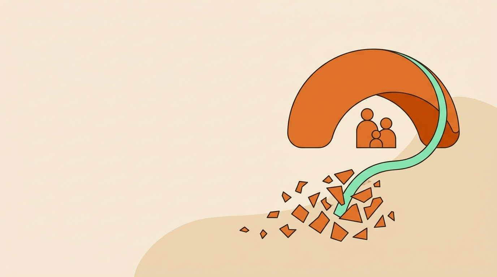
九好对应：好平台 · 好市场 · 好方案
五类方案：保险家、名企家、财富家、邻里家、规划家
回答从哪里触达客户、由谁支付，以及进入哪一种健康服务场景。
九好对应：好产品 · 好医疗 · 好服务
基础健康：德康 · 德好 · 德护
重大医疗：德元 · 德愈 · 德医
高端长寿：德尊 · 德际 · 德甄
回答能够提供什么专业能力，以及由哪支团队和资源网络完成履约。
九好对应：好效果 · 好健康 · 好生活
客户侧：体验、健康改善与家庭服务获得感
支付侧：续期、续约、升单与风险管理
回答服务效果如何被验证，并转化为客户、保险和企业的持续价值。
战略承接：九好已经给出完整经营框架，九德已经形成专业供给矩阵；本章继续解决的是如何把这些能力组织成有支付方、有责任人、有交付标准的产品。
平安：F端金融、B端企业、C端个人。
联好对应：保险家／规划家、名企家，以及财富家、邻里家等渠道。
状态：规划已定义。
需验证真实付款方、预算、合同、定价与续费。
平安：家庭医生负责医疗健康，养老管家负责银发照护。
联好对应：三好共管、健康管家／医疗顾问；德尊、巴伐利亚和大爱城。
状态：部分在做。
需形成统一入口、首责人员、会员关系和转介权责。
到线：互联网医院
到院：德医／德元／德愈与合作医院
到家：IoT／康养小屋
到企：名企家
状态：资源有布局。
需核验城市覆盖、容量、SLA、成本和失败补救。
3+2+4的核心缺口：支付入口、服务枢纽和交付资源都能找到对应项；目前缺少把三者连接起来的客户资格、预算结算、统一责任人和可验收服务标准。
平安：权威家庭医生团队。
联好：三好共管已列出医师、营养师和健康管理师人员。
正在做：团队基础明确；需补统一责任人、产能与质量认证。
平安：5A路径贯穿询问、评估、建议、协助与安排。
联好：已有筛查、非药物干预、慢病管理和就医协助环节。
待形成：统一SOP、SLA、工单和异常升级。
亚健康：德康
慢病：德好＋德护
疾病：德元＋德愈＋德医
已有基础：产品命名和部分服务材料已形成；需补SKU、周期、价格和交付物。
联好映射：德尊、德际、德甄＋合作医院、互联网医院、44家已建展厅和两座具名康养基地。
待核验：合作深度、客户资格、预约容量、调用条件与履约凭证。
11312的核心缺口：九德已经覆盖亚健康、慢病、疾病和稀缺资源；下一步要用“一支团队负责、一条路径贯穿、三类人群分层、资源可调用”把产品真正串起来。
在线问诊、报告解读、健康咨询、风险筛查、用药与复诊提醒。
盘活资源：互联网医院、线上平台、三好共管、IoT设备。
产品容器：保单基础权益／企业基础服务。
家庭健康管家、慢病与体重管理、就医导航、专家二诊和康复随访。
盘活资源：三好团队、合作医院、区域融合服务中心。
产品容器：升级权益／家庭会员／企业风险人群计划。
重大疾病、国际医疗、康复护理、长寿管理和阶段性康养旅居。
盘活资源：九德专项能力、巴伐利亚、大爱城及高端医疗网络。
产品容器：高端会员／专项服务包／企业核心人才计划。
经营链路：高频服务激活 → 识别家庭需求 → 进入连续管理 → 调用医疗与康养资源 → 促进续期、会员升级和企业续约。共同底座是健康档案、服务工单、三好团队及合作医疗网络。
平安依靠集团 2.5亿个人客户和 5.6万企业客户；微医依靠天津医保按人头付费；天使医生依靠医院场景中的家庭服务付费；京东／阿里依靠 C 端药品消费。
凡是支付方越稳定、越前置，商业模式的确定性就越高；反之，纯粹依赖 C 端问诊付费意愿的平台，始终难以摆脱“流量红利消退即增长停滞”的困境。
天使医生用可验证的临床结局数据（子痫前期风险下降18%等）证明价值；平安用件均保费、续保率、加保率等财务指标证明价值。
缺乏这类可验证指标的平台，即使讲得出“管理式医疗”“HMO”的故事，也很难获得资本市场和企业客户的持续信任。
这与本报告“行业背景概览”一章提出的“行业未来的胜负手”判断相互印证：未来竞争不是“谁的 App 流量更大”，而是谁能以更低成本、更可信赖地组织医疗健康服务，并让支付方愿意持续买单。对富德而言，任何健康管理板块的立项，都应该先问“我们能稳定掌握哪一类支付方、能用什么指标证明交付价值”，再决定具体做哪些产品和服务。
到场客户中完成健康档案比例
家庭成员绑定率
服务权益激活率
首次家庭医生咨询率
筛查异常者的专业复核率
后续就医服务使用率
30／90天客户回访满意度
加保、续保和转介绍率
一场筛查若没有后续，用户只留下焦虑；若由销售解释，用户会觉得是销售套路。应设置明确的分工。
解释筛查结果、风险边界和就医建议
建立档案、安排跟踪
协助预约和服务兑现
最后才做家庭保障缺口与服务方案沟通
| 低层权益 | 中层权益 | 高层权益 |
|---|---|---|
| 在线问诊、健康测评 | 家庭医生、体检、慢病管理、就医协助 | 重疾专案、陪诊、养老管家、居家照护、高端医疗资源 |
| 解决日常问题 | 解决健康管理问题 | 解决家庭重大医疗与养老问题 |
| 低层资源 富德心服务平台＋乌镇互联网医院：高频在线问诊、健康测评与健康档案 | 中层资源 销售网点／代理人网络：分层产品包装、客户动员，链接体检、家医与就医协助 | 高层资源 河源巴伐利亚庄园（生命如意家园）：养老旅居、康养体验与高阶权益展示 |
用户才能理解：保费更高，不只是保额更高，服务的响应能力、资源层级和家庭覆盖范围也不同。
这也是平安能把健康、医疗、养老服务放进高保费寿险和年金险中的核心原因。
产品设计五大原则：①先高频、后低频，先标准化、后重交付；②以家庭为最小经营单元（保单持有人、配偶、子女、父母共享一个家庭账户）；③服务分层，不做“一刀切”（免费基础权益用于激活，高价值服务以会员资格或次数包区分）；④先承诺服务确定性，再谈健康改善（不以疾病治愈、排队优先或理赔结果作不当承诺）；⑤保险与医疗独立决策（医疗建议由合格医疗人员提供，健康服务数据与核保、理赔、营销之间设置授权与用途隔离机制）。
| 产品层级 | 目标客群 | 保障配置方向 | 配套服务权益 |
|---|---|---|---|
| 健康安心包 | 普通存量客户、年轻家庭 | 与现有寿险/重疾险/医疗险结合 | 在线健康咨询、体检报告初读、健康档案、服务导航 |
| 家庭健康守护包 | 有子女或父母的家庭、续期重点客群 | 长期保障、重疾/医疗保障服务增强 | 家庭医生/健康管家、年度健康评估、就医导航、基础陪诊 |
| 就医无忧包 | 中高端医疗需求、担忧大病就医效率的客户 | 中高端医疗、重疾、费用补偿组合 | 就医协助、专家二诊协调、治疗路径说明、出院后随访 |
| 长寿康养包 | 临近退休、银发家庭、高净值客户 | 养老年金/长期保障与健康养老资格协同 | 健康评估、养老管家、居家照护资源协调、康复护理咨询 |
员工健康基础计划：团险基础保障+人均服务预算，服务咨询/报告解读/权益入口。员工健康管理计划：补充医疗+健康管理服务费，体检后分层/慢病管理/用药提醒/就医导航。核心人才医疗支持计划：高保障补充医疗+专项预算，专家二诊/就医协助/康复及家庭延伸服务。
结构为“保障责任标准化+服务模块可选配+年度运营报告”；企业报告只呈现经授权、去标识化的群体数据，不向企业披露员工个人诊疗信息。
每项权益须写清：服务对象、生效条件、服务内容（做什么/不做什么）、服务标准（次数/时效/覆盖地区）、支付边界、风险边界。
服务触发点覆盖投保生效、体检异常、就医住院、慢病识别、续期前五个关键时刻，每个时刻都应有明确的下一步动作和承接服务。
客户单独场景化授权、最小必要与用途隔离、正向激励优先、主体与责任清晰。
不得将健康服务数据用于拒保、拒赔或歧视性定价。
解决“不确定是否就医”，接通及时率、一次解决率是核心指标
报告结构化解读与风险分层
医院科室建议、预约协助、陪诊/住院协调
病历整理、专家匹配、意见回传
建档评估、定期随访、异常升级
用药清单、提醒、续方衔接
出院评估、上门护理资源协调
居家养老方案、适老改造、紧急联络预案
基础健康会员：咨询、报告解读、健康档案，由保单/企业福利预算覆盖。家庭健康会员：家庭医生、就医导航、慢病入组评估，保单分层权益或年度会员费覆盖。医养专项服务包：就医协助、慢病周期管理、康复护理、养老管家，按次/按周期/按项目收费。
不建议首期推出“无限次、全国全覆盖、全部免费”的服务承诺。就医绿通、陪诊、护理、养老机构协调等高度依赖城市供给的服务，应按城市等级、服务时段和客户权益等级定义标准。
0—6个月验证产品价值：选定1—2个重点城市和存量客群，上线基础会员/报告解读/咨询/就医导航，跑通权益激活与工单系统，不自建重资产医疗网络。6—12个月验证商业闭环：引入慢病管理和就医专项包，测试会员升级和服务包付费。12—24个月复制与协同：扩展城市与供应网络，连接康复、养老与理赔服务，形成客户分层运营。
| 维度 | 借鉴经验 | 描述 |
|---|---|---|
| 产品设计 | 不做单点服务，做“支付入口+分层会员+场景交付+服务网络”组合 | 先用咨询、报告解读等高频基础服务激活客户，再用就医、慢病、康复、养老等高价值场景建立信任，避免“保险附送八项服务”的零散权益感 |
| 权益分层与升单 | 三层套餐（医疗健康/居家养老/高品质康养）对应不同保费门槛，中间档“居家养老管家”转化率与性价比最高 | 件均保费差异的本质是“准入门槛+向上销售”叠加，而非同一产品因加健康服务而涨价；纳入健康险责任条款的服务成本受净保险费20%上限约束，高端权益应明确其产品与合同形态 |
| 代理人渠道机制 | 代理人只讲权益、不做医疗判断；履约体系必须独立于代理人体系之外搭建 | 把保单权益梳理成标准化“产品-权益对照表”，代理人像卖保单条款一样讲权益；专业交付完全托付给独立的医养服务经理/第三方TPA队伍 |
| F端市场活动 | 检测只是邀约钩子，家庭议题才是成交议题；投保后必须立即“激活权益” | 不要把“异常发现率”作为活动成功指标，应关注权益激活率、家庭成员绑定率、后续就医服务使用率；活动逻辑应从“发现问题促投保”倒转为“先让客户感知未来问题有人负责” |
| B端市场打法 | 先拿企业账户、再运营员工；产品组织为“健康委托管理+会员制健康管理+保险+”三层 | B端不能照搬F端“活动邀约-现场体验-个人成交”逻辑，到企活动是签约后的服务交付与续约证明，而非获客主手段 |
| AI技术路径 | 优先场景化单点突破（代理人辅助、体检报告OCR、标准化产品自动核保），而非自研通用大模型 | 中型险企更现实的路径是“成熟底座+场景卡位+垂类智能体单点突破”，需注意规避平安已布局的专利权利要求链路 |
| 合规与风险边界 | 条款内服务成本≤净保险费20%；单独服务须明示合同与价格、不得强制捆绑；保险与医疗须独立决策 | 健康服务数据用于核保、理赔、营销前需另行明确授权，不得用于拒保拒赔或歧视性定价；合规责任应前置到产品设计和总部治理层面，而非压给一线代理人 |
从保单客户和企业账户进入，用基础权益建立使用习惯，再以分层会员、就医和养老服务提升客户体验与续期价值。
选择需求明确的专科与合作医院，用驻点团队连接家庭需求，组合监测、专家资源和连续管理，形成独立付费的服务产品。
一个家庭服务账户，清楚的服务边界与责任人，按工单接力的专业网络，以及能让支付方复盘的使用、时效和体验证据。
以医院产科为入口，经营孕产家庭全周期
以保单与企业账户为入口，持续经营F端与B端
先为合作方创造原来没有的收入，再按合同分享增量；稳定入口沉淀用户池，持续服务推动分层升级，增量再反哺下一轮供给。
| 维度 | 平安的做法 | 富德 + 联好的已有基础 | 可借鉴的方向 |
|---|---|---|---|
| 战略定位 | 医疗养老与综合金融并列双轮，服务用于获客、留存、加保 | 已形成“AI科技＋保险保障＋健康管理”的全生命周期健康战略 | 让健康服务更多进入保险经营的日常语言 |
| 产品 | 保单是主商品，权益挂接险种和累计保费门槛 | 九德、三好、六联等专业供给已较为丰富 | 把服务进一步沉淀为与保单关联的权益 |
| 销售 | 代理人讲保障方案与权益，专业团队独立履约 | 代理人网络与联好专业团队均已具备 | 明确销售与专业交付的分工和衔接 |
| 履约 | 家庭医生、养老管家统一编排线上、院内、到家、到企 | 三好共管与医院、康养等合作资源已有布局 | 逐步形成统一调度、SLA与异常升级机制 |
| 数据归因 | 服务使用与经营结果形成反馈 | 健康档案、CRM、IoT等平台已有规划 | 在合规前提下建立效果验证与经营回流 |
| 组织协同 | 总部统一权益标准，渠道与服务分别考核 | 保险与健康主体已具备协同基础 | 形成共同目标与统一的权益、标准管理 |
平安参照：2025年末享有医养权益的客户人均合同3.37份、AUM约6.14万元，分别为无权益客户的1.5倍和4.1倍。此为相关性，并非服务效果的因果证明。
专业中心、服务团队、AI和医疗康养资源是重要基础；但对客户和一线伙伴来说，能力清单本身较难直接转化为购买理由。
我有什么资格？需要时找谁？多久有人响应？谁会一直跟进？
健康服务未必需要高频日活：持续轻触达维持联系，关键时刻的专业履约建立信任。后者留下的服务记忆，往往更能影响续期、加保与转介绍。
平安的路径建立在长期资本投入与自有医疗体系之上；结合富德的实际，轻资产、合作履约、验证后投入，可能是更稳妥的节奏。
五个环节相互关联：①②关系到客户是否使用，③关系到服务能否交付，④关系到各方能否持续投入，⑤关系到能否放心扩大。其中④涉及多方，最需要共同商量。
建议保单生效时不以授权健康数据用于营销、核保、理赔为前提；健康档案单独授权，并与销售数据隔离。
平安家医服务手册已写明“权益激活、首访、建档”；“每张保单现场统一激活”未见公开资料，此处旅程为参考设计，可在试点中调整。
| 档位 | 绑定条件 | 权益包（前台场景） | 预算口径 | 服务承诺 |
|---|---|---|---|---|
| 普惠层 | 全部有效保单客户、团险员工 | 在线咨询、体检报告解读、健康档案、服务导航 | 基础会员预算，按人年计 | 线上响应时限；数字化为主 |
| 升级层 | 指定长期险种或累计保费门槛；家庭客户 | 家庭医生／健康管家、体检异常承接、90天周期管理、就医导航 | 高价值客户权益预算：资格人数＋实际使用结算 | 指定责任人；异常升级时限；家庭成员覆盖 |
| 高端层 | 高保额或高累计保费，资格审核 | 重疾就医协助、专家二诊、康复与居家照护协调 | 专项服务预算：按次、按项目结算 | 按城市和病种公布可兑现范围、时效与备援方案 |
每项权益写清：服务对象、生效条件、服务内容（做什么／不做什么）、服务标准（次数／时效／地区）、支付边界、风险边界。便于客户理解和一线讲解。
2021年原银保监会通知：健康险中支出类服务成本不超过保费10%、咨询类不超过2%；服务不得成为保险对价，不得强制搭售。寿险、年金的高端权益靠“门槛＋向上销售”，不是同一产品加价。
前台呈现场景解决方案；中间是产品容器（基础权益、升级会员、专项服务）；后台调用九德能力、三好团队和医疗网络。预算建议在产品设计阶段一并确定。
A＋B层。从符合画像到实际成交仍有转化过程，需再乘以触达、需求触发、权益理解和负担能力。
“8,000万客户”与“700—800万活跃用户”口径不同，建议先统一再定基数。
去重个人／家庭ID → 在保状态 → 保费与缴费期 → 家庭关系 → 服务资格与使用。
占比与人数以“700—800万可经营客户”为待验证分母推算，仅用于试点抽样和资源分配，不用于对外宣传或预算承诺。
| 候选场景 | 客户密度 | 痛点强度 | 价值可见 | 可标准化 | 单位经济 | 经营关联 | 6—12月 可验证 | 初步建议 |
|---|---|---|---|---|---|---|---|---|
| 体检异常解释与就医承接 | ● | ● | ● | ● | ● | ● | ● | 主产品：F端、B端通用，首次价值感知最快 |
| 六高90天管理（单病／多病共管） | ● | ◐ | ◐ | ● | ◐ | ● | ● | 辅产品：验证持续运营、依从性与续费 |
| 企业员工体检后异常管理 | ◐ | ● | ● | ● | ● | ● | ● | 并入主产品，作为B端版本 |
| 重疾确诊后二诊—就医—康复 | ○ | ● | ● | ◐ | ◐ | ● | ◐ | A／B层定向能力，按资格提供 |
| 银发慢病＋居家照护 | ◐ | ● | ◐ | ○ | ○ | ● | ○ | 后续方向：可选城市试点上门服务 |
| 孕产院内院外周期服务 | ○ | ● | ● | ◐ | ◐ | ○ | ◐ | 借鉴天使医生方法，可作为后续方向 |
主产品侧重首次价值感知快、F端和B端通用；辅产品侧重验证持续服务、依从性、单位成本和续费。高端就医、重疾和养老可面向A／B层客户逐步建设。
| 价值获得方 | 获得的价值 | 参考承担方式 |
|---|---|---|
| 富德生命 | 续期、升单、转介绍 | 采购基础会员与保单权益 |
| 企业客户 | 员工福利感知、运营外包 | 人年费、项目费、委托资金池 |
| 个人家庭 | 高阶、家属或专项服务 | 会员费、周期包、按次自费 |
| 联好健康 | 服务收入、客户关系 | 对交付、成本、满意度负责 |
| 代理人／渠道 | 更强的客户经营工具 | 激活与首服纳入继续率考核 |
价值 ＝ 采购收入 ＋ 企业服务收入 ＋ 自费收入 ＋ 经验证的续期、升级增量
成本 ＝ 专业人力 ＋ 第三方履约 ＋ 渠道运营 ＋ 技术客服分摊 ＋ 质量损失
2020年关连交易框架（2021—2023年度上限，已过期，仅看结构）：集团向平安健康采购服务上限50／64／87亿元；平安健康向集团支付客户转介与流量导入等费用上限8.9／12.6／16.4亿元。
| 阶段 | 阶段目标 | 未达预期时的调整 |
|---|---|---|
| 0—3个月 机制准备 | 权责、合同、数据白名单、联合P&L、SOP与试点客群就绪 | 先完善机制，再扩大触达 |
| 3—6个月 关系建立 | 客户愿意用，首次价值明确，单位成本可计算 | 调整入口、话术、权益或客群 |
| 6—12个月 商业验证 | 续期／续约、升级、自费中至少一项增量稳定出现 | 优化权益组合，聚焦高价值场景 |
| 12—24个月 按单元复制 | 扩张后SLA、单位成本和客户体验保持稳定 | 适当调整扩张节奏 |
优先服务高价值客户和有明确健康需求的客群，逐步扩大覆盖。
体检异常承接＋六高90天管理（单病管理与多病共管）；九德能力作为后台模块灵活组合。
合规、透明、可兑现，挂接保单档位；独立收费服务按相应资质与规则开展。
保险与健康共同商议产品、预算与归因；每个重点产品明确一位端到端负责人。
单独授权、最小必要、用途隔离；保险侧关注激活、完成、满意度等经营状态。
小屋、中心、基地和AI的投入结合试点结果逐步推进，让每一步都有依据。
希望通过在一个明确客群、一个明确场景中的实践，验证联好的服务能让客户更愿意留在富德、更愿意配置合适保障，并在需要时体验到确定性。以上是基于公开资料与内部研究的初步思考，供大家交流讨论。